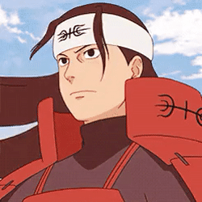
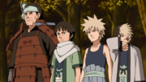

Hashirama Senju (千手柱間, Senju
Hashirama) was a member of the famed Senju clan. He himself was hailed as the "God of Shinobi" for his unmatched
ninja prowess. Hashirama sought peace for the shinobi world, and to that end founded Konohagakure with his clan,
his childhood friend and rival: Madara Uchiha and the Uchiha clan. He would later become the First Hokage (初代火影, Shodai
Hokage, Literally meaning: First or Founding Fire Shadow) of Konohagakure. Although he was not able to achieve
peace during his lifetime, his legacy and vision for the world would continue to shape the village and the
entire shinobi world even after his death.
Hashirama Senju (千手柱間, Senju
Hashirama) was a member of the famed Senju clan. He himself was hailed as the "God of Shinobi" for his unmatched
ninja prowess. Hashirama sought peace for the shinobi world, and to that end founded Konohagakure with his clan,
his childhood friend and rival: Madara Uchiha and the Uchiha clan. He would later become the First Hokage (初代火影, Shodai
Hokage, Literally meaning: First or Founding Fire Shadow) of Konohagakure. Although he was not able to achieve
peace during his lifetime, his legacy and vision for the world would continue to shape the village and the
entire shinobi world even after his death.
Background
Hashirama
was born
during the Warring States Period, the eldest of Butsuma Senju's four sons. Hashirama and his brothers grew up on
the battlefield waging constant war with the Senju's rivals: the Uchiha. During his infrequent downtime,
Hashirama met a boy his own age named Madara. The two quickly developed a friendly rivalry, be it skipping
stones or urinating in rivers, with Hashirama typically winning their contests. Hashirama did not approve of
this practice of sending children to fight and die, believing it would only increase the bitterness between the
Senju and Uchiha, thus causing more deaths.
After the deaths of their
brothers, Kawarama and later Itama, Hashirama and his remaining brother, Tobirama, decided a new shinobi system
would need to be implemented to end the cycle of child deaths, a system that would require an alliance between
the Senju and Uchiha. Like Hashirama, Madara was also a shinobi who had lost brothers on the battlefield.
Together they imagined a world where children like themselves wouldn't need to fight and where their brothers
would be safe from harm. As a precaution, Hashirama and Madara did not divulge their family names, but
nevertheless discovered each other's identities: Hashirama was a Senju, Madara was an Uchiha; it was their duty
to kill each other. Hashirama set this duty aside, unwilling to take his friend's life. Madara, however, decided
their dreams of a peaceful world were impossible, and therefore ended their friendship so that they could kill
each other without reservation.
>Previous
Page
>Home
Page